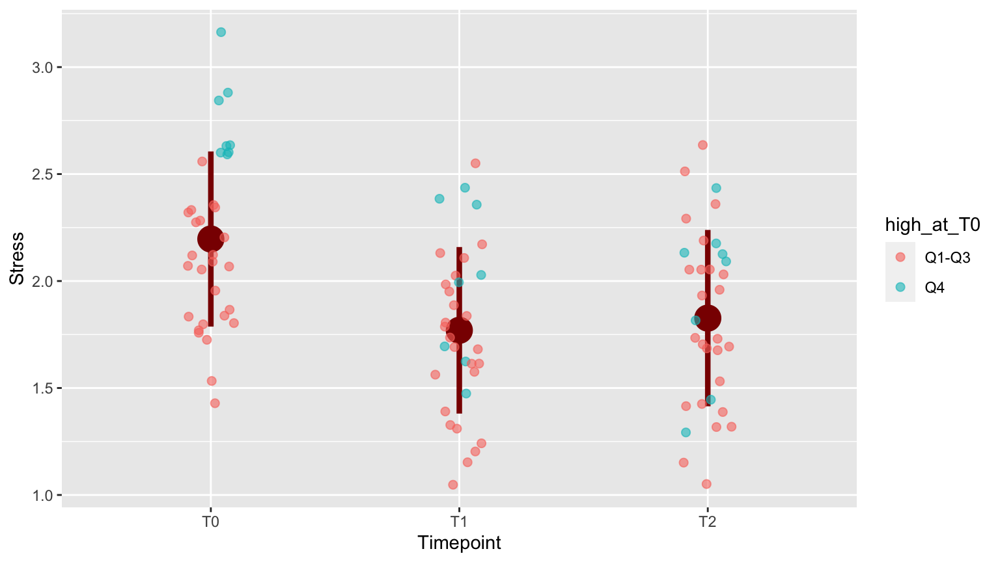
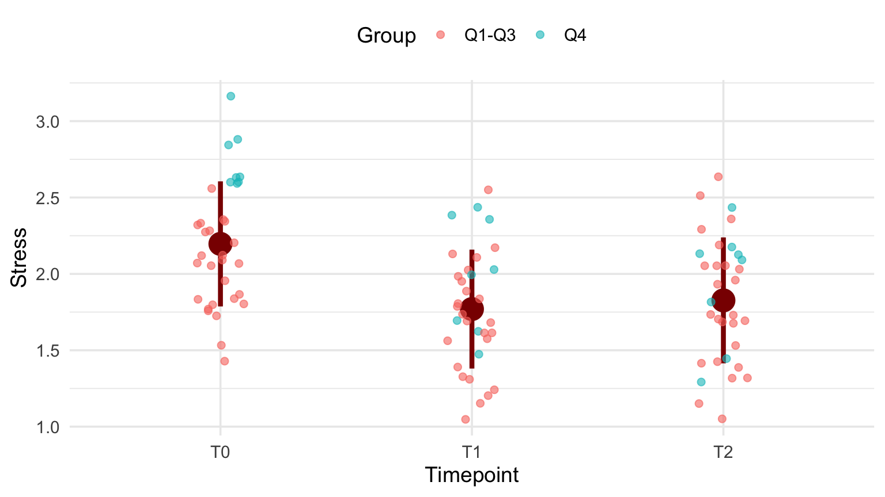

Chapter 2 Developing a custom visualization
2.1 An experimental PTSD treatment
This chapter shows the iterative process of building a visualization where both the audience and the data story are taken into consideration.
The story revolves around data that was collected in a research effort investigating the effect of some treatment of subjects with PTSD (Post-traumatic stress disorder). Only one variable of that dataset is shown here, a stress score.
Since the group size was very low, and there was no control group, statistical analysis was not really feasible.
But the question was: is there an indication of positive effect and a reason to continue the investigations? An attempt was made by developing a visualization to answer this question.
The data
The collected data was a distress score collected at three time points: 0 months (null measure, T0), 3 months (T1) and 12 months (T2) through questionnaires.
| Clientcode | T0 | T1 | T2 |
|---|---|---|---|
| 1 | 2.60 | 2.44 | 2.16 |
| 2 | 1.84 | 1.72 | 1.52 |
| 3 | 2.04 | 2.12 | 1.32 |
| 4 | 2.60 | 1.48 | 2.08 |
| 5 | 2.08 | 1.04 | 2.04 |
| 6 | 2.20 | 1.84 | 2.04 |
| 7 | 2.08 | 1.80 | 1.44 |
| 9 | 2.28 | 2.04 | 1.96 |
| 10 | 3.16 | 1.68 | 2.12 |
| 11 | 2.60 | 2.04 | 2.44 |
| 12 | 2.28 | 2.16 | 2.04 |
| 13 | 1.76 | 1.88 | 1.68 |
| 14 | 2.12 | 1.24 | 1.04 |
| 15 | 1.96 | 1.32 | 2.04 |
| 16 | 2.12 | 1.40 | 1.68 |
| 17 | 2.64 | 2.40 | 2.12 |
| 18 | 2.64 | 1.64 | 1.44 |
| 19 | 1.52 | 1.60 | 1.72 |
| 20 | 1.84 | 1.68 | 1.16 |
| 21 | 1.44 | 1.68 | 1.40 |
| 22 | 2.88 | 2.00 | 1.28 |
| 23 | 2.08 | 2.12 | 2.64 |
| 24 | 1.80 | 1.32 | 1.72 |
| 25 | 1.88 | 1.56 | 1.68 |
| 26 | 2.84 | 2.36 | 1.80 |
| 27 | 2.32 | 1.80 | 2.20 |
| 28 | 1.76 | 1.56 | 1.92 |
| 29 | 2.36 | 1.60 | 1.72 |
| 30 | 1.80 | 1.20 | 1.32 |
| 31 | 2.36 | 1.96 | 2.28 |
| 32 | 2.56 | 2.56 | 2.52 |
| 33 | 1.72 | 1.16 | 1.40 |
| 34 | 2.32 | 2.00 | 2.36 |
You can see this is a really small dataset.
Choose a visualization
Before starting the visualization, several aspects should be considered:
- The audience:
- people do not want to read lots of numbers in a table
- in this case no knowledge of statistics (and this is usually the case)
- people do not want to read lots of numbers in a table
- The data:
- here, small sample size is an issue
- this dataset has connected measurements (timeseries-like)
For this dataset I chose a jitterplot as basis because it is well suited for small samples. A boxplot tends to be indicative of information that simply is not there with small datasets. Moreover, a boxplot has a certain complexity that people who are not schooled in statistics have problems with.
Tidy the data
To work with ggplot2, a tidy (“long”) version of the data is required. In the next chapter this will be dealt with in detail. Here the T0, T1 and T2 columns are gathered into a single column because they actually represent a single variable: Time. All measured stress values, also a single variable, are gathered into a single column as well. This causes a flattening of the data (less columns, more rows).
distress_data_tidy <- gather(distress_data,
key=Timepoint,
value=Stress, "T0", "T1", "T2")
distress_data_tidy$Timepoint <- factor(distress_data_tidy$Timepoint, ordered = T)
knitr::kable(head(distress_data_tidy, n = 10), caption = "Tidied data")| Clientcode | Timepoint | Stress |
|---|---|---|
| 1 | T0 | 2.60 |
| 2 | T0 | 1.84 |
| 3 | T0 | 2.04 |
| 4 | T0 | 2.60 |
| 5 | T0 | 2.08 |
| 6 | T0 | 2.20 |
| 7 | T0 | 2.08 |
| 9 | T0 | 2.28 |
| 10 | T0 | 3.16 |
| 11 | T0 | 2.60 |
A first version
This is the first version of the visualization. The jitter has been created with geom_jitter. The plot symbols have been made transparent to keep overlapping points visible. The plot symbols have been made bigger to support embedding in (PowerPoint) presentations. A little horizontal jitter was introduced to have less overlap of the symbols, but not too much - the discrete time points still stand out well. Vertical jitter omitted since the data are already measured in a continuous scale. A typical use case for vertical jitter is when you have discrete (and few) y-axis measurements.
ggplot(distress_data_tidy, aes(x=Timepoint, y=Stress)) +
geom_jitter(width = 0.1, size = 2, alpha = 0.6)
Figure 2.1: A first attempt
Add mean and SD
To emphasize the trend in the timeseries, means and standard deviations from the mean were added using stat_summary(). Always be aware of the orders of layers of your plot! Here, the stat_summary was placed “below” the plot symbols. Again, size was increased for enhanced visibility in presentations. Why not the median? Because of the audience! Everybody knows what a mean is, but few know what a median is - especially at management level.
mean.sd <- function(x) {
c(y = mean(x), ymin = (mean(x) - sd(x)), ymax = (mean(x) + sd(x)))
}
ggplot(distress_data_tidy, aes(x = Timepoint, y = Stress)) +
stat_summary(fun.data = mean.sd, color = "darkred", size = 1.5) +
geom_jitter(width = 0.1, size = 2, alpha = 0.6)Figure 2.2: With mean and standard deviation
Emphasize worst cases
To emphasize the development of subjects who were in the worst shape at the onset of the research (T0), the top 25% with respect to distress score at T0 were highlighted.
distress_data$high_at_T0 <- ifelse(distress_data$T0 > quantile(distress_data$T0, 0.75), "Q4", "Q1-Q3")
distress_data_tidy <- gather(distress_data,
key=Timepoint,
value=Stress, "T0", "T1", "T2")
distress_data_tidy$Timepoint <- factor(distress_data_tidy$Timepoint, ordered = T)
knitr::kable(head(distress_data))| Clientcode | T0 | T1 | T2 | high_at_T0 |
|---|---|---|---|---|
| 1 | 2.60 | 2.44 | 2.16 | Q4 |
| 2 | 1.84 | 1.72 | 1.52 | Q1-Q3 |
| 3 | 2.04 | 2.12 | 1.32 | Q1-Q3 |
| 4 | 2.60 | 1.48 | 2.08 | Q4 |
| 5 | 2.08 | 1.04 | 2.04 | Q1-Q3 |
| 6 | 2.20 | 1.84 | 2.04 | Q1-Q3 |
The color is added using aes(color = high_at_T0) within the geom_jitter() call.
p <- ggplot(distress_data_tidy, aes(x=Timepoint, y=Stress)) +
stat_summary(fun.data=mean.sd, color = "darkred", size = 1.5) +
geom_jitter(width = 0.1, size = 2, alpha = 0.6, aes(color = high_at_T0))
p
2.2 Last tweaks: fonts and legend
The plot is more or less ready. Now is the time to adjust the plot “theme.”
p + theme_minimal(base_size = 14) +
theme(legend.position = "top") +
labs(color="Group")
2.3 The code
Here is the code used for data preparation:
distress_data$high_at_T0 <- ifelse(
distress_data$T0 > quantile(distress_data$T0, 0.75), "Q4", "Q1-Q3")
distress_data_tidy <- gather(distress_data,
key=Timepoint,
value=Stress, "T0", "T1", "T2")
distress_data_tidy$Timepoint <- factor(distress_data_tidy$Timepoint,
ordered = T)
mean.sd <- function(x) {
c(y = mean(x), ymin=(mean(x)-sd(x)), ymax=(mean(x)+sd(x)))
}This is the final code for the plot
ggplot(distress_data_tidy, aes(x=Timepoint, y=Stress)) +
stat_summary(fun.data=mean.sd, color = "darkred", size = 1.5) +
geom_jitter(width = 0.1,
size = 2,
alpha = 0.6,
aes(color = high_at_T0)) +
labs(color="Group") +
theme_minimal(base_size = 14) +
theme(legend.position = "top") +
labs(color="Group")